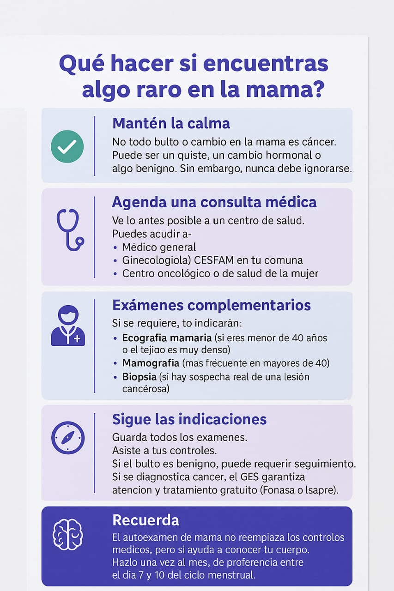

Links de ayuda
Autoexploracion de seno
https://youtu.be/A1m_6OHiebs?si=uPhugBoHvuAAMeqv
como utilizar reloj inteligente
Como utilizar el kit
¿Que hacer si notas algo anormal? 
12 señales que podrian identificar cancer se mama
https://youtu.be/5pk11p8vZEY?si=maACAXoiOyd3kLnl